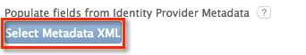

Copy the following IDP Metadata into a text file. Save it with the file name metadata.xml.
Click Select Metadata XML, as shown below. Navigate to the metadata.xml file you saved when prompted.
Download the following x.509 Certificate.
Sign into the Okta Admin app to generate this variable.